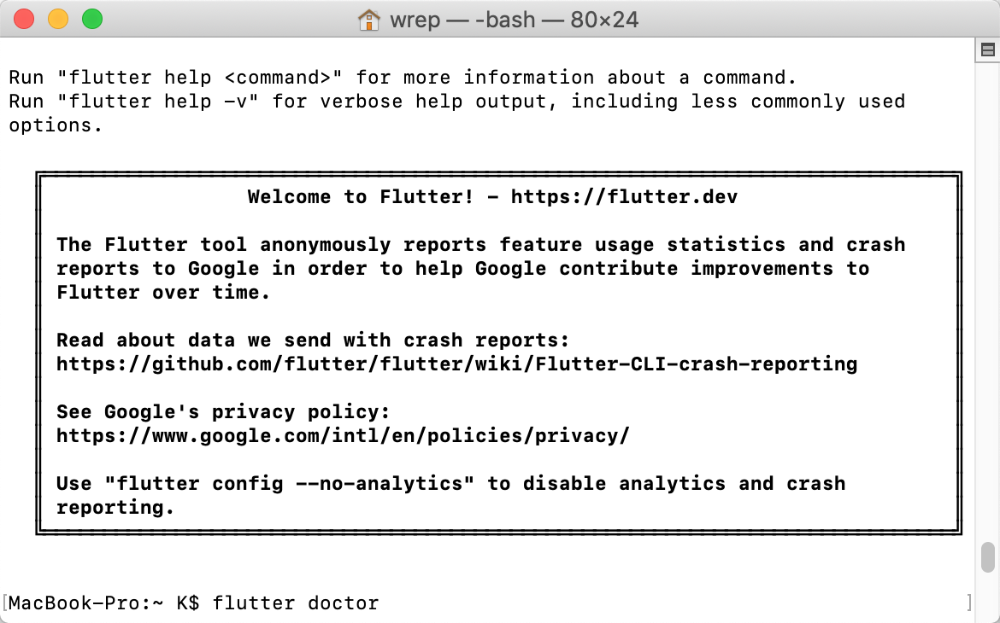
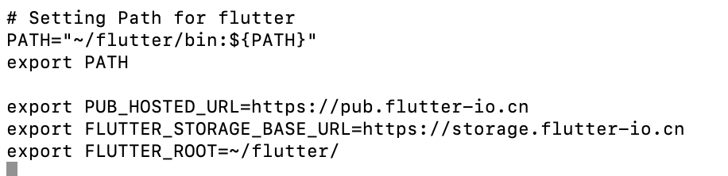
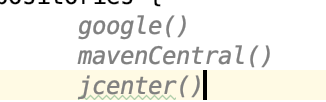
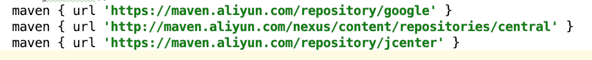
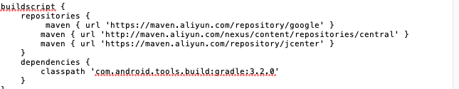
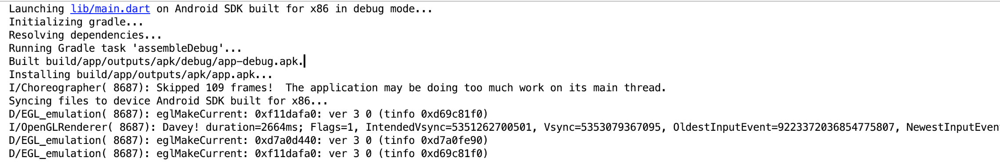

#####写在开篇
首先感谢技术胖的视频教程，本教程也是在其环境配置教程上的查漏补缺，视频教程，图文篇
这是我学习Flutter开发的系列的第一篇，初学Flutter，以后遇到的疑难问题都会在这个系列补充。
#####系统要求/准备
要安装并运行Flutter，您的开发环境必须满足以下最低要求:
操作系统: macOS (64-bit)
磁盘空间: 700 MB (不包括Xcode或Android Studio的磁盘空间）.
工具: Flutter 依赖下面这些命令行工具，科学上网的梯子
bash, mkdir, rm, git, curl, unzip, which
注意：一般你会在brew这个命令下载遇到问题
学习安装brew：https://segmentfault.com/a/1190000013317511
#####Android Studio 下运行flutter
#####获取flutter SDK
1.去flutter官网下载其最新可用的安装包，转到下载页。
#####配置环境变量
压缩包下载好以后，找个位置进行解压。我放在了根目录
1.打开终端工具，使用vim进行配置环境变量，命令如下：vim ./.bash_profile
2.在打开的文件里增加一行代码，意思是配置flutter命令在任何地方都可以使用。export PATH=/app/flutter/bin:$PATH
这里贴一下我的路径 PATH="./flutter/bin:${PATH}" export PATH
提示：这行命令你要根据你把压缩包解压的位置来进行编写，写的是上面解压的路径
3.配置完成后，需要用source命令重新加载一下 ，具体命令如下：source ./.bash_profile
4.完成这些以后，我们flutter的安装工作就算完成了，但是这还不能进行开发。可以使用命令来检测一下，是否安装完成了flutter -h
出现下面的结果，说明到目前为止，我们安装一切顺利。

#####检测开发环境
1.我们可以使用Flutter为我们提供的命令来进行检查：flutter doctor
该命令检查您的环境并在终端窗口中显示报告。Dart SDK已经在捆绑在Flutter里了，没有必要单独安装Dart。 仔细检查命令行输出以获取可能需要安装的其他软件或进一步需要执行的任务（以粗体显示）
例如:[-] Android toolchain - develop for Android devices • Android SDK at /Users/obiwan/Library/Android/sdk ✗ Android SDK is missing command line tools; download from https://goo.gl/XxQghQ • Try re-installing or updating your Android SDK, visit https://flutter.io/setup/#android-setup for detailed instructions.
2.若你的Android studio也没有安装，那么你要先安装这个编辑器，安装好后，可以顺便下载Android SDK。
Android Studio下载地址：http://www.android-studio.org/
打开后选择对应的Mac版本
这时候梯子的重要性就来了，这里如果你下载的非常慢，可以把下载链接放到迅雷里面下载，链接地址
https://dl.google.com/dl/android/studio/install/3.2.0.26/android-studio-ide-181.5014246-mac.dmg，记得搭上梯子。
3.若你的Android studio已经安装，那么第一步要作的是允许协议（android-licenses）。允许方法就是在终端运行如下命令：flutter doctor --android-licenses
一路y就行了
4.结束以后再使用flutter doctor进行检测后，会看到还是有很多x。大概如下：To install, run: brew install --HEAD libimobiledevice brew install ideviceinstaller ✗ ios-deploy not installed. To install: brew install ios-deploy ✗ CocoaPods not installed. CocoaPods is used to retrieve the iOS platform side's plugin code that responds to your plugin usage on the Dart side. Without resolving iOS dependencies with CocoaPods, plugins will not work on iOS. For more info, see https://flutter.io/platform-plugins To install: brew install cocoapods pod setup
大概意思就是我们需要这些软件，Flutter推荐你用brew命令进行安装。
我们可以直接在终端里输入下列命令（每输完一个都要等一会，等待软件包安装完成）brew install --HEAD libimobiledevice brew install ideviceinstaller brew install ios-deploy brew install cocoapods pod setup
很慢
5.我们还需要为Android Studio安装一下Flutter插件（这个有可能你安装过，如果出现下面的提示，说明你还没有安装）✗ Flutter plugin not installed; this adds Flutter specific functionality. ✗ Dart plugin not installed; this adds Dart specific functionality.
打开Android Stuido 软件，然后找到Plugin的配置，搜索Flutter插件。路径：Preferences…->Plugins->Brow额repositores…
下面是我已经安装好的界面
安装完成后，你需要重新启动一下Android Studio软件。
#####Pub源的配置
如果你没有梯子，因为大家都知道的原因，你还需要在环境变量里配置一下Pub源，不然你是无法进行使用的。
运行：vim ./.bash_profile
增加三行配置export PUB_HOSTED_URL=https://pub.flutter-io.cn export FLUTTER_STORAGE_BASE_URL=https://storage.flutter-io.cn export FLUTTER_ROOT=./flutter/
重新加载环境变量source ./.bash_profile
我的环境截图：

####安装AVD虚拟机 运行第一个Flutter项目
1.Android studio新建Flutter项目
打开Andorid Studio ，我们选择，新建Flutter项目。
2.选择第一个选项Flutter Application(flutter应用)。
这步完成后，系统就会自动为我们创建一个Flutter项目（新建项目的过程也是很慢的，它要去谷歌下载gradle，这个东西很容下载失败，如果失败，可以多反复试几次）。需要梯子
3.安装AVD虚拟机
现在需要一个虚拟机来运行我们的程序，可以点击Android Studio中的上方菜单tool -AVD Manager选项。
出现新建菜单，选择Create Virtual Device…..
选择虚拟机类型，我选择的是Nexus 5x。
选择系统，这里尽量选择最新的，选择好后，又是一个漫长的等待过程。
安装好后，点击开始按钮，运行虚拟机了（第一次运行，需要安装系统，会慢一些），运行起来后，如下图。
4.让项目跑起来，虚拟机运行以后，可以点击debug按钮，运气不错的话，你的Flutter程序经过编译后，就会跑起来了。但是根据我的观察，还是跑不起来，会遇到error runing Gradle 错误，解决方案在下面
####错误问题与解决方案
1.Unhandled exception:
Exception: ideviceinfo returned an error:
ERROR: Could not connect to lockdownd, error code -13
错误截图如下：
方案：这就需要你更新你的brew，使用命令brew update，然后就等吧，很慢。
2.Error runing Gradle 错误解决
1 | Initializing gradle... |
这个问题的产生的原因，大家都懂的，
有两种解决方案
1.有梯子的情况
修改掉项目下的android目录下的build.gradle文件
在原来的google(),jcenter()加上 mavenCentral(),即可如下

有两个地方要修改，一个是buildscript，一个是allprojects
2.无梯子的情况，替换阿里云的镜像
首先网上流传的maven { url 'http://maven.aliyun.com/nexus/content/groups/public' }
这个链接已经挂了，包括技术胖的教程也是这个链接，我在这里更正一下（找了一下午），改为maven { url 'http://maven.aliyun.com/nexus/content/repositories/central' }，
要更改的还是两个地方不要忘记，最后如图：

3.全局变量修改
修改Flutter SDK包下的flutter.gradle文件,这个目录要根据你的SDK存放的位置有所变化。比如我的路径./flutter/packages/flutter_tools/gradle
替换buildscript内容即可，如下：

4.还要保持classpath的版本一致
com.android.tools.build:gradle:3.2.0的3.2.0最好和AndridStudio的系统版本一致
5.到这里debug,成功后console打印，如图

完成

参考链接
Flutter开发环境搭建Mac版
立即开始使用 Android Studi
Flutter混编之路——iOS踩坑记录
入门: 在macOS上搭建Flutter开发环境
MacOS install
使用阿里云Maven镜像的正确姿势
Flutter error: Could not download bcprov-jdk15on.jar (org.bouncycastle:bcprov-jdk15on:1.56)
__END__
文章出处：在macOS上搭建Flutter开发环境
作者签名：所有伟大的事情都源于梦想，始于微不足道.
关于主题：Hexo - Live For Code
版权声明：文章除特别声明外，均采用 BY-NC-SA 许可协议，转载请注明出处